마케팅 일이 코드와 토큰이 됐어요
예전에는 광고 한 편마다 팀이 붙었어요. 정적 광고에는 그래픽 디자이너와 카피라이터가, UGC 영상 광고에는 크리에이터·영상 편집자·모션 그래픽 디자이너가 필요했죠. 지금은 에이전트 하나가 토큰을 쓰면서 같은 일을 해요.
슬라이드 왼쪽 파란 칸이 예전의 '광고 한 편당 팀'이고, 오른쪽 초록 칸이 지금의 '에이전트 하나'예요. 정적 광고는 ChatGPT 이미지 API, 영상 광고는 Seedance와 Tesseract가 맡고, 이걸 GrokBot·Claude Code·Dots 같은 하네스가 돌려요. 아래 회색 칸은 긴 영상 편집 사례예요. Mirage의 Tesseract가 90분짜리 팟캐스트를 한 번에 편집해서 침묵과 다시 찍은 테이크을 자르고, 말하는 사람을 알아본다고 해요.
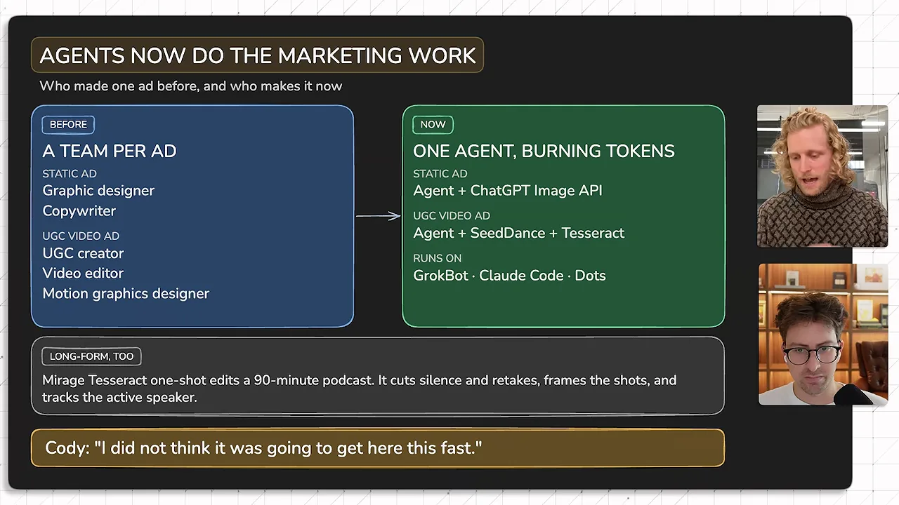
에이전트가 일하려면 세 가지가 필요해요
Cody는 에이전트에게 살기 좋은 '배양 접시'를 만들어 줘야 한다고 해요. 그 접시를 채우는 게 데이터, 접근 권한, 도구예요. 아래 슬라이드 가운데 '당신의 에이전트' 칸 위로 데이터(Airbyte → ClickHouse), 왼쪽 아래로 접근 권한(Facebook 광고·Google 광고·CMS(Content Management System) 쓰기), 오른쪽 아래로 도구(Kie.ai·fal·OpenRouter 같은 API)가 붙어 있어요.
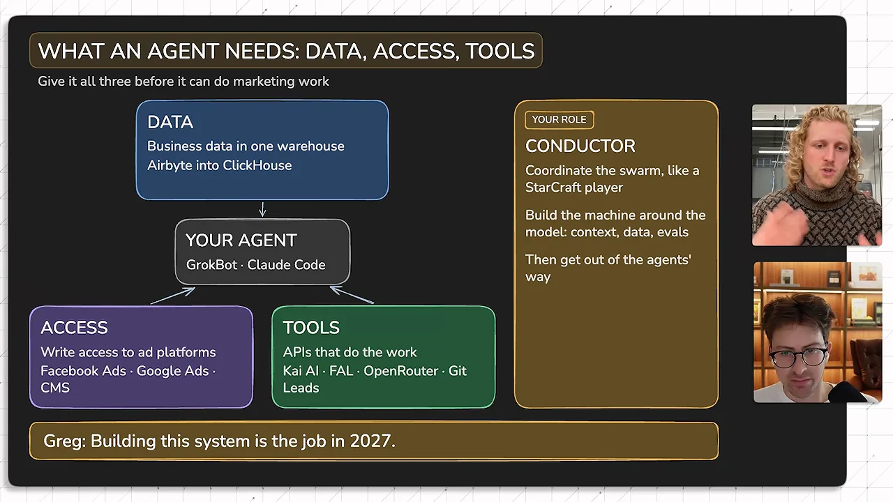
Greg는 이 시스템을 만드는 게 2027년에 사업하는 사람의 일이라고 정리해요. Cody는 사람이 오히려 에이전트의 길을 막고 있다고 말해요. 여러 유닛을 동시에 부리는 스타크래프트 플레이어처럼 지휘자가 돼야 한다는 거예요.
데이터는 파이프라인과 웨어하우스로
첫 번째 조각은 데이터예요. 에이전트가 광고 채널의 API를 직접 조회하면 문제가 생겨요. 슬라이드 빨간 줄이 직접 조회할 때, 초록 줄이 웨어하우스를 거칠 때예요.
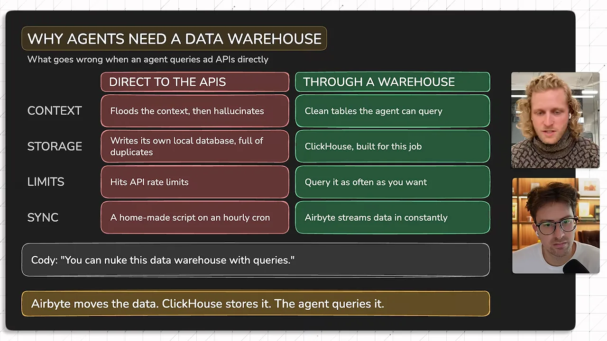
| 문제 | API를 직접 조회하면 | 웨어하우스를 거치면 |
|---|---|---|
| 컨텍스트 | 데이터가 쏟아져 들어오고 환각이 생겨요 | 정리된 테이블만 쿼리해요 |
| 저장 | 에이전트가 로컬 DB(Database)를 멋대로 만들다 중복이 생겨요 | 이 일을 위해 만든 ClickHouse에 모아요 |
| 한도 | API 호출 한도에 걸려요 | 원하는 만큼 쿼리해도 돼요 |
| 동기화 | 매시간 도는 직접 만든 스크립트가 필요해요 | Airbyte가 계속 흘려 넣어요 |
Airbyte는 데이터 파이프라인이에요. Facebook 광고, Google Analytics, HubSpot CRM(Customer Relationship Management)처럼 데이터가 쌓이는 곳에서 꺼내 웨어하우스로 계속 옮겨요. ClickHouse는 그 데이터가 모이는 데이터 웨어하우스예요. Cody는 '웨어하우스는 쿼리로 폭격해도 된다'고 표현해요.
광고 한 편을 매출까지 따라가요
한곳에 모으는 진짜 이유는 광고 하나의 파급을 끝까지 잇기 위해서예요. 슬라이드 윗줄은 광고를 봤고(Facebook 광고), 사이트에 왔고(Google Analytics), 리드가 됐고(HubSpot CRM), 제품을 썼다(PostHog)는 흐름이에요. 아래 초록 칸이 결제 처리 업체 데이터예요.
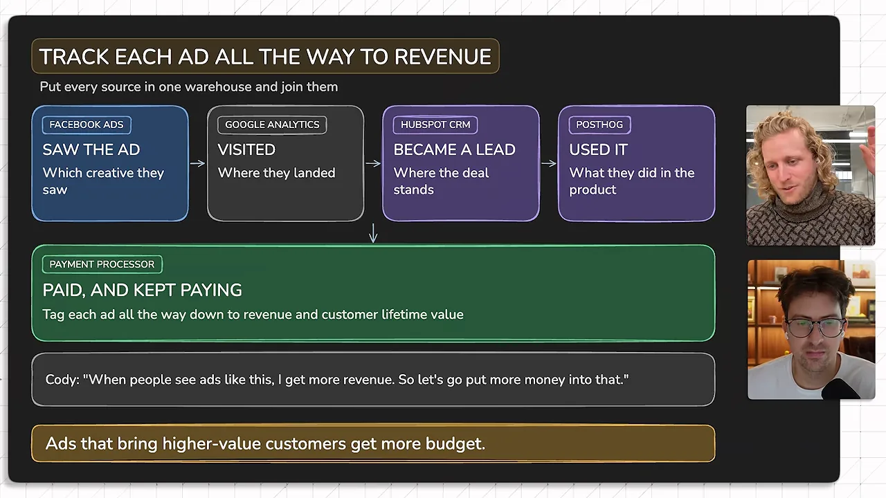
광고 플랫폼은 쓰기 전용으로 연결해요
두 번째 조각은 광고 플랫폼 접근 권한이에요. Facebook 광고라면 Marketing API 토큰을 만들어요. Cody는 이 API를 쓰기에만 써요. 광고 소재를 올리고, 광고를 끄고, 광고를 옮기는 일이에요. 데이터를 읽는 건 언제나 웨어하우스에서 해요.
슬라이드 윗줄이 그 구조예요. 왼쪽 파란 칸(ClickHouse)은 읽기, 오른쪽 보라 칸(광고 API)은 쓰기예요. 아래 빨간 칸이 이렇게 나누는 이유예요.
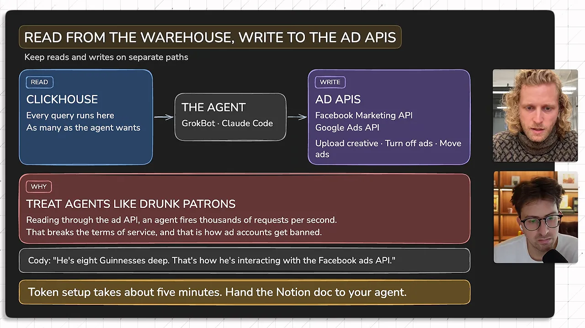
'GrokBot이 광고 계정을 날렸다'는 이야기는 에이전트를 써서 생긴 일이 아니라는 게 Cody의 설명이에요. 데이터를 끌어오려고 요청을 마구 보내서 API 약관을 어긴 거예요. Greg는 에이전트를 식당의 술 취한 손님처럼 생각하라고 했고, Cody는 기네스 여덟 잔째인 삼촌에 비유했어요.
You should assume your agents are like drunk patrons at a restaurant.
에이전트는 식당의 술 취한 손님이라고 생각하는 게 좋아요.
— 영상 15:02
Google 광고도 같은 방식으로 연결해요. 토큰 발급은 5분이면 끝나고, 설정 문서를 에이전트에게 주면 절차를 하나씩 안내해 준다고 해요.
도구를 쥐여 주면 상위 0.1% 마케터가 돼요
세 번째 조각은 도구예요. 사람들이 이제 막 알아차리기 시작한 부분이라고 해요. 미디어 바잉, 영업 개발 담당, 영상 편집자처럼 일하려면 그 일에 맞는 API가 있어야 해요. 오픈소스 방식이라면 구독과 키를 하나씩 모아요.
| 도구 | 영상에서 맡긴 일 |
|---|---|
| Kie.ai | 이미지·영상 모델을 하나의 API로 묶어 써요. 정적 광고와 Seedance 렌더에 써요 |
| fal | 전사(transcription)와 보이스 클론 |
| OpenRouter | 여러 LLM을 한곳에서 불러요 |
| Apollo 등 리드 데이터 업체 | 이메일과 인물 데이터 |
이 환경이 갖춰지면 에이전트가 중간 작업을 해요. Cody는 10년 동안 마케팅을 했는데 에이전트가 생각지도 못한 걸 내놓는다며, 상위 0.1% 마케터라고 표현해요. 예로 든 건 Google 광고 에이전트예요. 아래 슬라이드 왼쪽 초록 칸이 규모(검색어 5,000개를 20초에), 오른쪽 위 보라 칸이 에이전트가 던지는 질문이에요.
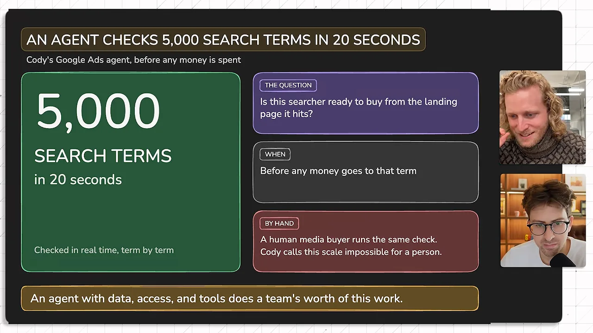
Cody는 이 세 조각을 직접 조립할 수도 있고, 자기 회사 Graphed처럼 한데 묶은 서비스를 쓸 수도 있다고 해요. 데모도 Graphed CLI(Command-Line Interface)를 깐 코딩 에이전트에서 진행해요. Greg는 자기는 이 회사와 관계가 없다고 밝혀요.
스와이프 웨어하우스: 좋은 광고의 창고
Greg는 Cody의 환경 그림에 한 조각이 빠졌다고 해요. 좋은 광고의 참고 자료를 모아 둔 스와이프 웨어하우스예요. 좋은 크리에이티브만 있으면 광고 알고리즘이 그걸 살 ICP(Ideal Customer Profile)를 알아서 찾아 주니, 결국 승부는 소재에서 나요.
슬라이드 왼쪽 파란 칸이 AI 이전의 스와이프 파일, 오른쪽 초록 칸이 지금 필요한 스와이프 웨어하우스예요. 사람이 넘겨볼 만큼의 폴더에서, 에이전트가 영감을 꺼내 쓰는 수천 개 규모의 창고로 바뀌어요.
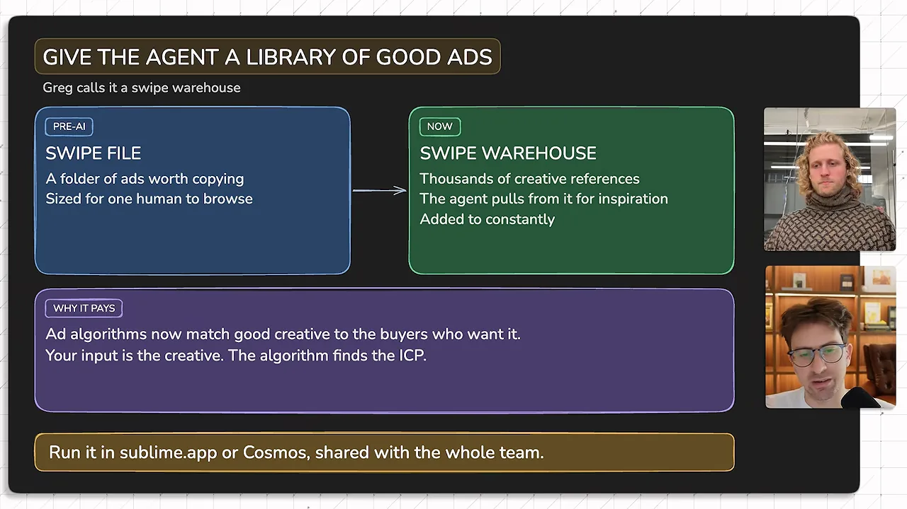
Cody는 이런 작업을 스킬 파일로 묶어 영상 설명란에 공개했어요. Google 광고 에이전트든 정적 광고든, 스킬을 Claude Code에 붙여 넣으면 그 에이전트가 만들어진다고 해요.
정적 광고를 한 줄로 만들기
데모는 코딩 에이전트 입력창에 /static-ads와 브랜드 URL(Uniform Resource Locator)을 넣는 것으로 시작해요. 슬라이드 왼쪽이 스킬이 거치는 다섯 단계, 오른쪽 회색 칸이 이번 방송에서 돌린 일곱 브랜드예요.
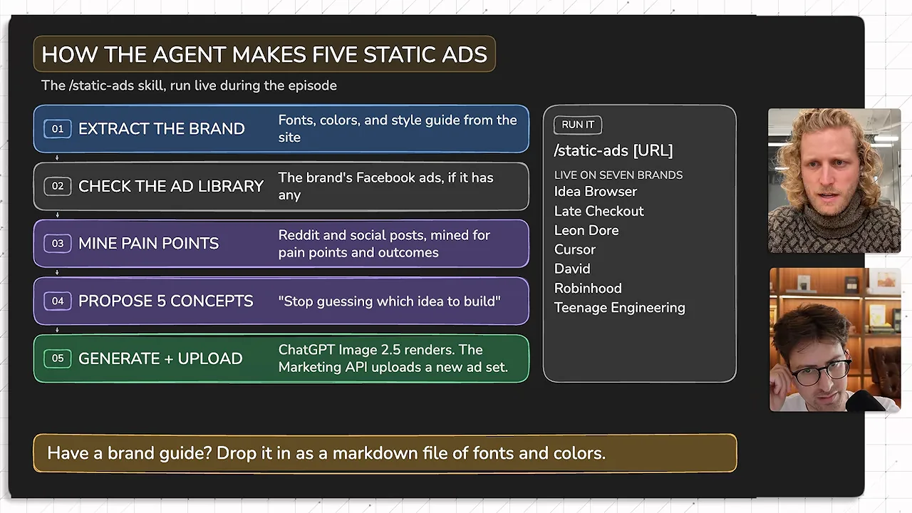
- 브랜드 추출 — 웹사이트에서 폰트, 색, 스타일 가이드를 뽑아요.
- 광고 라이브러리 확인 — 그 브랜드의 Facebook 광고가 있으면 가져와요.
- 고통 포인트 수집 — Reddit과 소셜 미디어 대화에서 고통과 원하는 결과를 캐요.
- 콘셉트 5개 제안 — 헤드라인과 장면을 정해요.
- 생성과 업로드 — 이미지를 만들고, Marketing API로 새 광고 세트에 올려요.
Idea Browser로 돌린 결과가 아래 화면이에요. 콘셉트마다 장면 설명, 헤드라인, 보조 문구, 행동 유도 문구(CTA(Call To Action))가 붙어 있어요. 예를 들어 2번 '트렌드 차트'는 끝에서 치솟는 검색량 그래프에 '월 60.5K, +3331%'를 달고, 헤드라인은 '사람들이 이미 검색하는 걸 만드세요'예요.
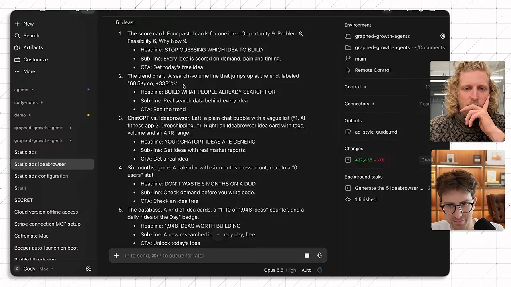
렌더된 광고 하나를 열어 보면 콘셉트가 그대로 그림이 됐어요. 위에 헤드라인, 가운데 검색량 그래프와 60.5K·+3331% 숫자, 아래에 '실제 검색 데이터' 문구와 버튼이 있어요.
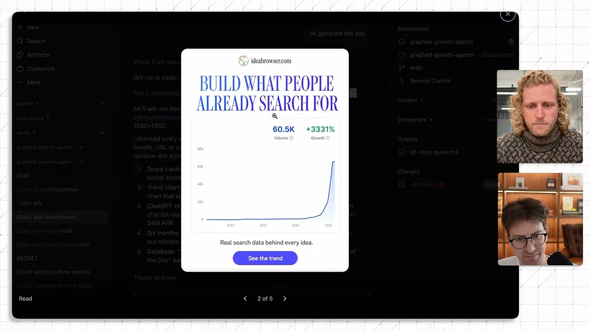
다른 브랜드 결과
세션을 여러 개 띄워 동시에 돌렸어요. Aimé Leon Dore는 광고 라이브러리에 광고가 0개였고, Cursor는 광고를 가져왔어요. 아래는 영상 41분대에 다시 열어 본 결과예요. Late Checkout 광고는 노트북 앞 사람 옆에 흐릿한 두 번째 인물을 그리고 '당신의 제품에 두 번째 사용자가 생겨요'라고 써요. 곧 에이전트가 사람 대신 제품을 쓸 거라는 메시지예요.
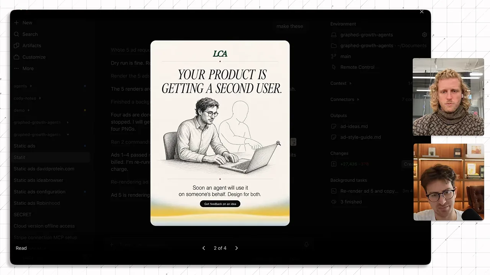
Cursor 광고는 코드 편집기 화면을 그대로 넣고 '아무도 적어 두지 않은 코드를 드디어 이해하세요'라고 써요. 개발 도구답게 제품 화면이 주인공이에요.
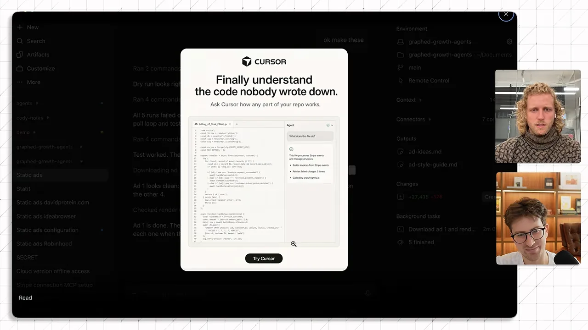
패션 브랜드 Aimé Leon Dore는 전혀 다른 결이에요. 의자에 걸친 니트 사진에 '한 번 사서 몇 년 입었어요'라는 문구만 얹었어요. 광고가 없는 브랜드라 사이트의 사진 톤을 따라갔어요.
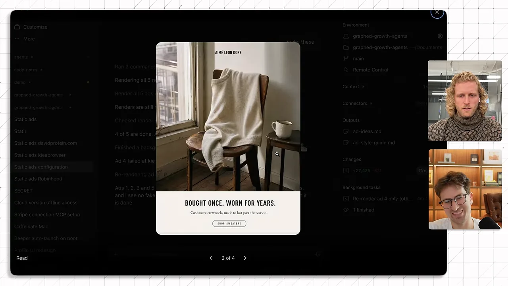
UGC 아바타 광고는 어떻게 만들까요
같은 콘셉트로 /ugc 스킬을 돌리면 대본을 쓰고 아바타 영상 광고까지 만들어요. 'UGC 광고 한 편에 50달러를 태웠다'는 사람이 많아서, Cody 팀은 비용을 줄이는 순서를 따로 짰어요. 핵심은 Seedance에 무엇을 같이 보내느냐예요.
슬라이드 왼쪽 세 칸이 한꺼번에 보내는 재료예요. 정확한 대본, fal 보이스 클론으로 만든 MP3(MPEG-1 Audio Layer III), 그리고 실제 크리에이터를 리믹스한 사진이에요. 칸마다 아래 줄에 그걸 넣는 이유가 적혀 있어요.
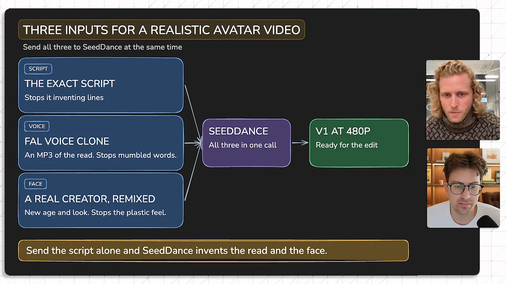
사진은 실제 크리에이터 사진에서 배경, 나이, 인종만 바꾼 거예요. 특정인을 흉내 내는 게 아니라 진짜 사람의 질감을 빌리는 거라고 설명해요.
480p로 뽑고, 에이전트가 편집해요
Seedance에서 나온 첫 버전은 480p예요. 1080p로 뽑으면 약 14달러가 드니, 싸게 480p로 뽑은 뒤 FFmpeg로 업스케일하고 블러를 넣어요. 그다음 영상을 단어 단위로 전사해서 대본과 맞춰 봐요. 아래 화이트보드가 그 예예요. 'Calendly'를 'Calenla'로 잘못 읽은 구간을 앞뒤 타임스탬프로 찾아, 아래 줄처럼 올바른 발음으로 바꿔 끼워요.
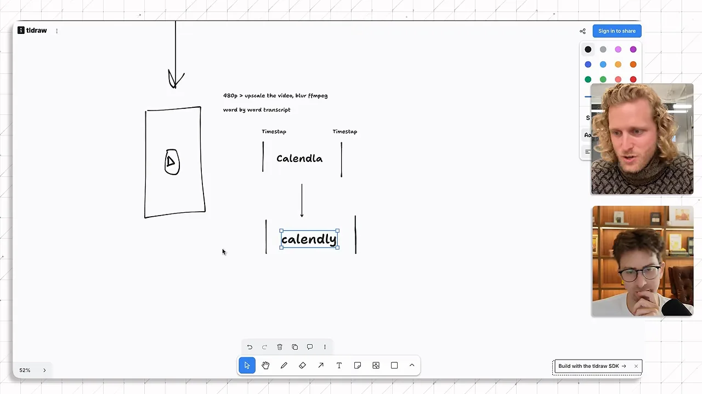
화이트보드 설명을 한 장으로 옮기면 이래요. 사람이 손대는 칸은 없어요.
flowchart LR A["대본"] --> B["fal 보이스 클론
MP3"] A --> C["Seedance
480p 렌더"] B --> C P["실제 크리에이터
리믹스 사진"] --> C C --> D["FFmpeg
업스케일·블러"] D --> E["단어 단위 전사
대본과 대조"] E --> F["틀린 단어
바꿔 끼우기"] F --> G["Tesseract
자막·모션 그래픽"] G --> H["완성 광고"]
아래 슬라이드가 같은 과정을 단계별로 정리한 거예요. 마지막 노란 칸이 눈여겨볼 부분이에요. 이 하네스를 클라우드에 띄우면 노트북 없이 광고 100편을 같은 방식으로 뽑을 수 있다고 해요.
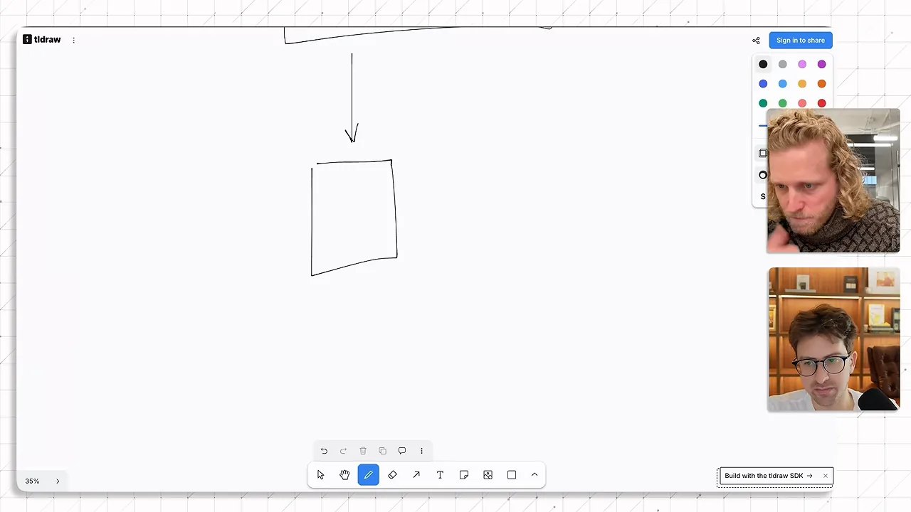
완성된 광고
완성본은 주방을 배경으로 여성 아바타가 Idea Browser를 소개하는 29초짜리 세로 영상이에요. 20초쯤에 '안에 든 스타트업 아이디어 1,948개' 모션 그래픽이 떠요.
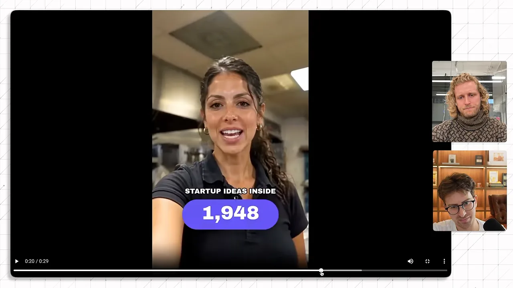
끝에는 ideabrowser.com 로고와 '오늘의 무료 아이디어 받기' 버튼이 행동 유도 문구로 붙어요.
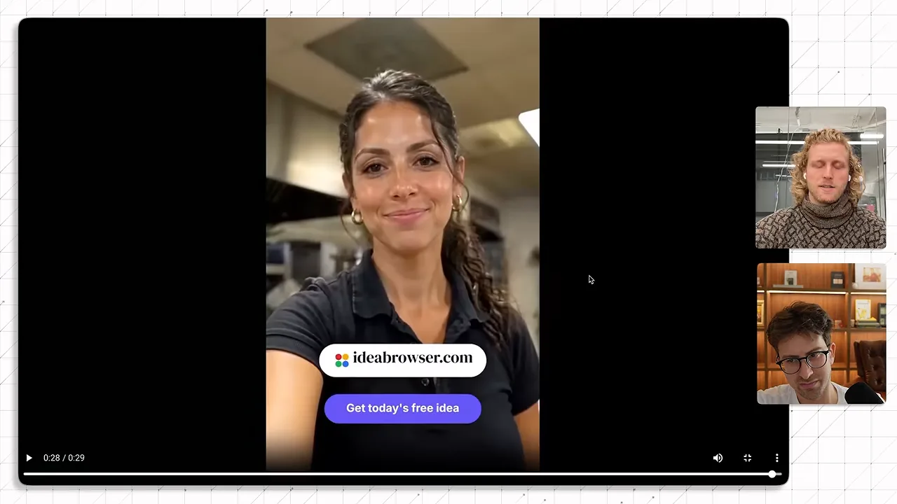
한 편에 약 5달러
이 광고는 4.75달러로 예상됐고, 모션 그래픽 몇 센트를 더해 약 5달러예요. 새 업체와 일하면 3달러 근처까지 내려갈 거라고 해요. 슬라이드 오른쪽 위 칸처럼 10편이면 50달러, 100편이면 500달러예요. 사람 팀이면 한 편에 300~500달러 넘게 든다고 해요.
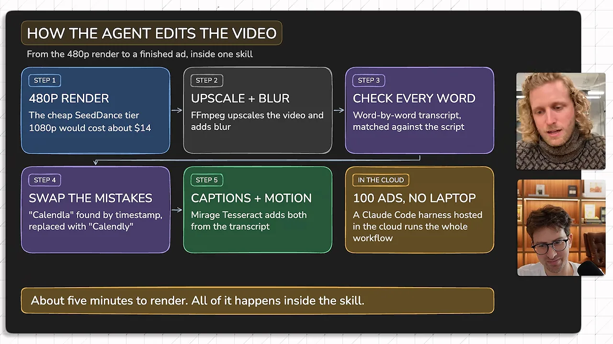
영상이 말한 숫자만 막대로 그려 보면 차이가 이 정도예요.
사람 크리에이터도 같은 흐름에 넣어요
AI 아바타만 쓸 필요는 없어요. Trybe나 SideShift 같은 UGC 크리에이터 네트워크를 API로 부르면, 사람이 하던 크리에이터 관리를 에이전트가 맡아요. 대본과 방향을 보내고 '자유롭게 바꿔도 된다'고 덧붙이는 식이에요. 아래가 Cody가 띄운 Trybe 첫 화면이에요. '크리에이터는 성과에 따라 벌고, 브랜드는 크리에이티브 엔진을 키운다'는 문구가 보여요.
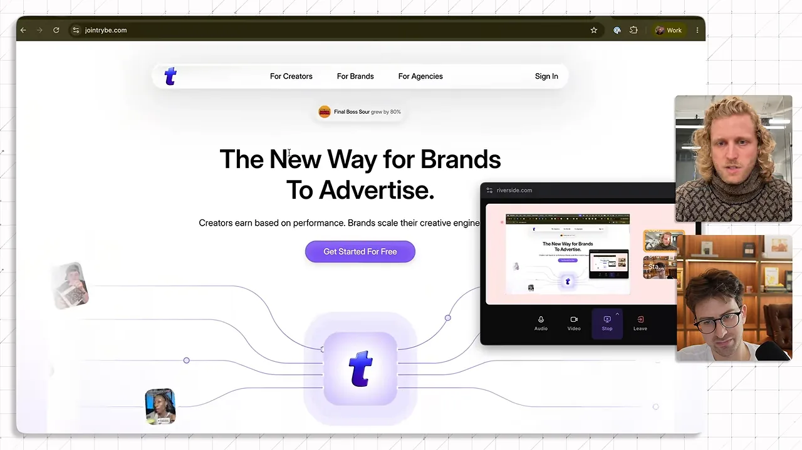
사람이 찍은 영상에도 똑같이 모션 그래픽이나 인포그래픽을 얹을 수 있어요. 아바타가 제품을 들고 있게 하려면 제품 사진을 참조 이미지로 같이 주면 돼요.
AI 크리에이티브 디렉터와 알고리즘에 먹이 주기
Greg는 코드 리뷰 도구처럼 광고도 AI가 먼저 검수하게 하자고 제안해요. 480p 초안을 보고 10점 만점에 8~9점이 안 되면 사람에게 보여 주지도 말라는 거예요. Cody는 바로 동의하고, 이미 하고 있는 사례를 들어요.
슬라이드 왼쪽 네 칸이 그 루프예요. 만들고(파랑), 비전 모델이 프레임마다 점수를 매기고(보라), 8점 미만이면 고쳐서 다시 보내고(빨강), 8~9점이면 그때 사람에게 보여 줘요(초록). 오른쪽 회색 칸이 지금 돌고 있는 금융 고객 사례예요.
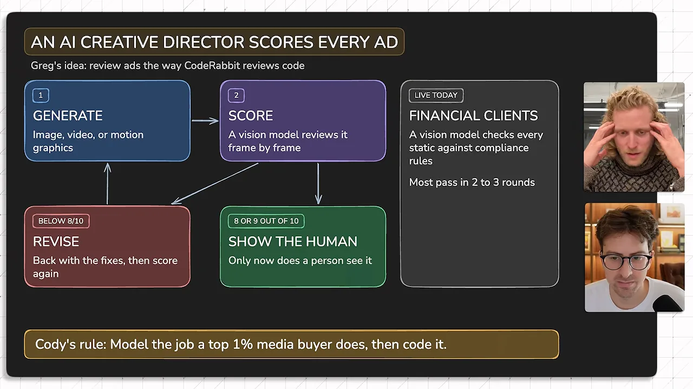
'직원'이 아니라 '해야 할 일'을 코드로
Cody는 이걸 사람처럼 직원으로 만들지 말라고 해요. 사람이 하던 일이 무엇이었는지 보고, 그걸 코드로 바꾸는 거예요. 만능 AI 하나로 Facebook 광고 계정을 돌리는 건 여러 회사에서 해 봤는데 형편없었대요. 대신 상위 1% 미디어 바이어가 하는 일을 사고 루프와 실시간 데이터 위에 코드로 옮겨요.
You don't need God in a box to run a Facebook ads account.
Facebook 광고 계정을 돌리는 데 상자 속 신이 필요하진 않아요.
— 영상 44:19
품질에 대해서는 현실적이에요. Seedance 생성물 50개 중 하나는 여전히 엉망이지만, 사람 팀 300달러 대신 4달러로 95%를 건지니 지금도 충분하다고 봐요. 이미지 수정은 ChatGPT Image 2.5가 원본을 잘 지키면서 고쳐서 좋다고 해요.
알고리즘에 소재를 먹이는 게 일이에요
Facebook 광고는 Andromeda 같은 알고리즘이 맞는 사람을 찾아 줘요. Cody는 '기계가 당신보다 똑똑하다'며, 할 일은 크리에이티브 속도라고 해요. 한 달에 10편 내던 회사에 내일 30편 묶음을 내자고 하는 식이에요. 몇 편을 낼지는 광고 예산과 CPL(Cost Per Lead)에 따라 정하는 공식이 있다고만 말해요.
소프트웨어 회사 사례가 이 논리를 보여 줘요. 30편을 냈더니 한 편이 데모 예약 2건을 건당 50달러에 따냈어요. 그 회사 평균은 150달러였어요. 그러면 Facebook은 전환할 두 사람을 찾았다고 보고 그 광고 지출을 멈춰요. 그러니 계속 새 소재를 넣어야 해요.
광고도 결국 코드예요
Seedance에 보내는 프롬프트는 JSON(JavaScript Object Notation) 덩어리예요. 이걸 데이터베이스에 저장하고 Facebook 성과 데이터와 묶으면, 광고 천 편을 '세포 단위'로 쪼개 무엇이 먹혔는지 볼 수 있어요. 앞에서 깐 데이터 웨어하우스가 여기서 다시 쓰여요. Cody는 5년 뒤엔 모든 회사가 이 인프라와 엔지니어링 인력을 갖춰야 경쟁할 수 있다고 봐요.
Greg는 크리에이티브 디렉터 에이전트에 두 가지를 더하자고 해요. 하나는 David Ogilvy의 책과 최근 2년간 최고 광고인들의 팟캐스트 100편을 읽혀 기본기를 익히게 하는 거예요. 다른 하나는 사람이 스와이프 웨어하우스에 좋은 예시를 계속 채우는 거예요. Cody는 팀이 발견한 워크플로를 한곳에 쌓아 모두가 쓰게 하는 게 가장 값진 일 중 하나라고 덧붙여요.